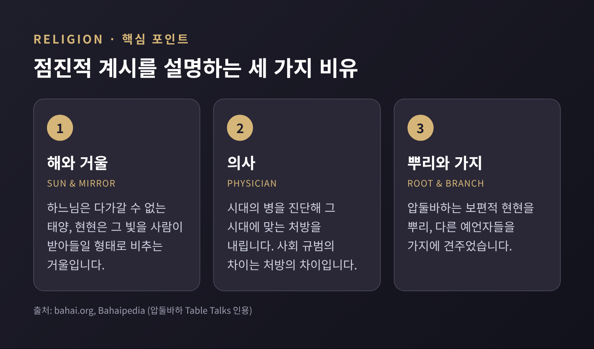
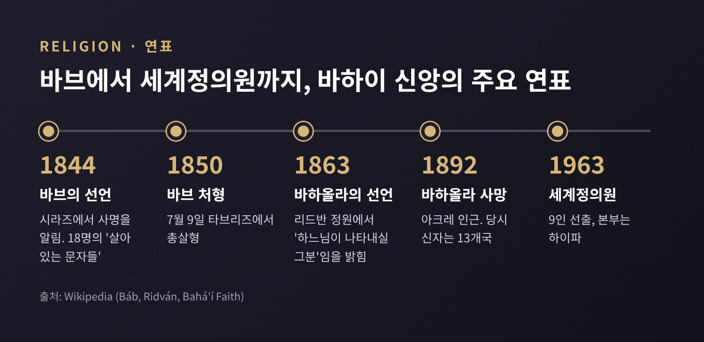
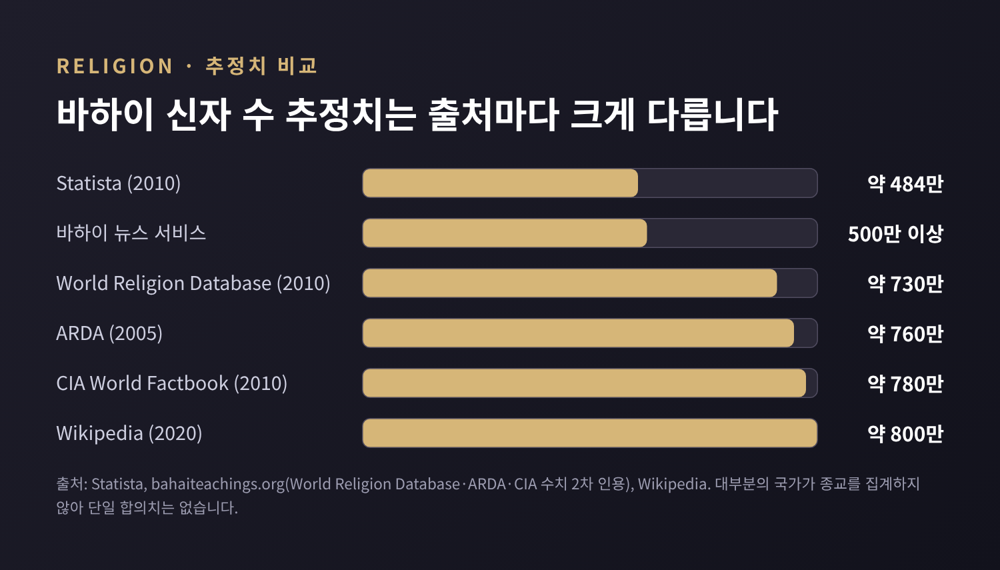
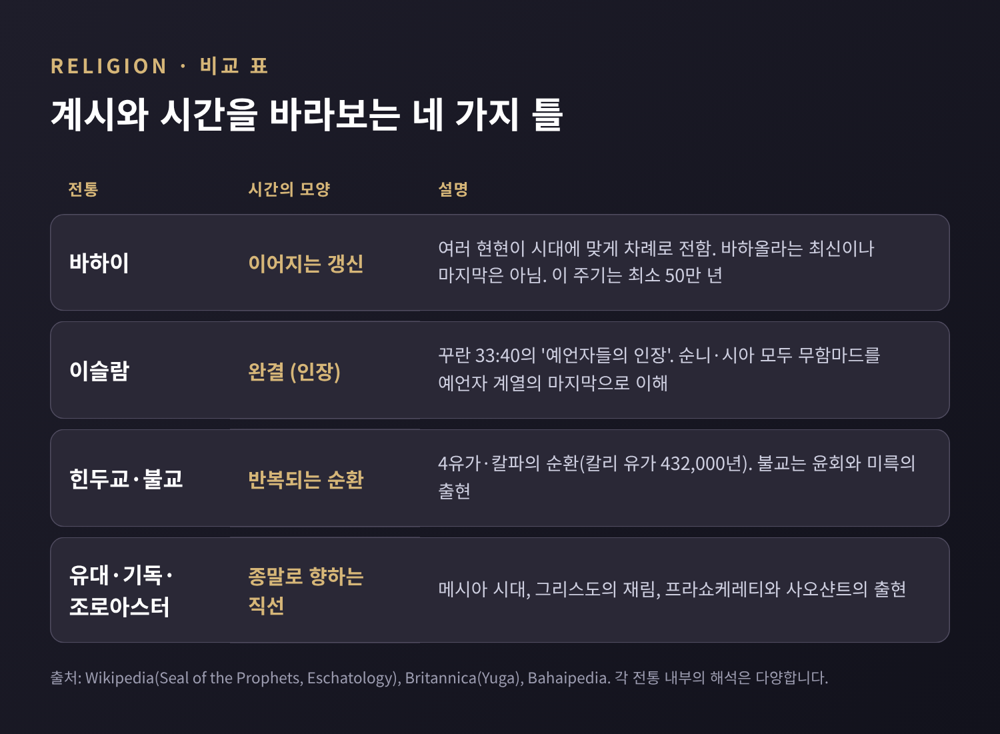

[종교] 바하이교 점진적 계시 — 종교는 하나의 근원에서 이어진다는 교리를 읽다

세 줄 요약
- 바하이 신앙의 '점진적 계시'는 아브라함에서 바하올라까지 여러 종교의 창시자가 한 하느님의 뜻을 시대에 맞게 차례로 전했다는 교리입니다.
- 이 교리는 계시가 한 번으로 완결되었다는 견해, 시간이 반복된다는 견해, 역사가 하나의 종말로 향한다는 견해와 구분됩니다.
- 이 글은 어느 쪽이 옳은지 판정하지 않고, 서로 다른 역사관을 비교종교학의 눈으로 정리합니다.
이번 글에서는 바하이 신앙의 '점진적 계시(progressive revelation)'를 정리해 보려 합니다.
"모든 종교는 하나의 근원에서 나왔다"는 문장은 흔하게 들리지만, 바하이 신앙에서는 이것이 체계를 갖춘 교리입니다.
창시자와 역사를 먼저 살피고, 이슬람·힌두교·불교·유대교·기독교의 시간관과 나란히 놓아 보겠습니다.
신앙의 옳고 그름을 따지는 글이 아니라, 종교학의 관점에서 구조를 읽는 글입니다.
■ 점진적 계시란 무엇인가
바하이 신앙에서 하느님은 사람이 온전히 알 수 없는 존재입니다.
그래서 하느님은 '하느님의 현현(Manifestation of God)'이라 불리는 사자를 통해 뜻을 드러낸다고 설명합니다.
바하이 공식 설명에 거명되는 인물은 아브라함, 크리슈나, 조로아스터, 모세, 붓다, 예수, 무함마드, 바브, 바하올라입니다.
이들의 안내가 이어져 인류의 사회적·영적 성장을 돕는 과정이 점진적 계시입니다.
핵심 비유는 두 가지입니다.
- 해와 거울: 하느님은 다가갈 수 없는 태양이고, 현현은 그 빛을 사람이 받아들일 수 있게 비추는 거울입니다.
- 의사: 현현은 시대의 병을 진단하고 그 시대에 맞는 처방을 내리는 의사입니다.

의사 비유는 종교 사이의 차이를 설명하는 장치이기도 합니다.
기도의 방향이나 음식 규정 같은 사회 규범은 처방이 달랐기 때문에 다르고, 본질은 같다는 논리입니다.
바하올라는 "모든 시대는 하느님의 빛을 새로운 분량만큼 요구한다"는 취지의 말을 남겼고, 압둘바하는 보편적 현현을 뿌리, 다른 예언자들을 가지에 견주었습니다.
자선이나 이웃 사랑 같은 일반 원리는 보편적이고, 사회법은 대체될 수 있다고 봅니다.
한 가지 짚어 둘 점이 있습니다.
'계절의 순환' 비유로 이 교리를 설명하는 글이 많지만, 해당 해설 사이트도 그것이 공식 인용이 아니라 필자의 프레임이라고 밝히고 있습니다.
이 글에서는 공식 설명에 나오는 비유만 다룹니다.
■ 창시자와 역사 — 바브에서 바하올라로
이 교리를 이해하려면 두 인물을 알아야 합니다.
1844년 5월, 이란 시라즈에서 알리 무함마드가 '바브(Báb, 문)'를 자처하며 사명을 알렸습니다.
첫 제자 물라 후사인에 이어 다섯 달 안에 17명이 더 따랐고, 이 18명을 '살아 있는 문자들'이라 부릅니다.
바브는 이슬람에서 기다리던 카임(마흐디)이라 주장했고, 감옥에서는 스스로를 현현이라 밝혔습니다.
자신의 사명은 "하느님이 나타내실 그분"을 준비하는 것이라고 했습니다.
바브는 1850년 7월 9일 타브리즈에서 총살형으로 생을 마쳤습니다.
그 뒤를 이은 인물이 1817년 테헤란에서 태어난 미르자 후사인 알리 누리, 곧 바하올라입니다.
그는 약 4개월간 시야치할 지하감옥에 갇혔고, 바그다드·콘스탄티노플·아드리아노플을 거쳐 아크레로 유배되었습니다.
1863년 4월 바그다드 근교 리드반 정원에서 가족과 측근에게 자신이 바브가 예고한 그분이라고 밝혔습니다.
이 선언일이 바하이 최대 명절 '리드반'의 기원이 되었습니다.
대부분의 바브 신도는 바하이가 되었고, 소수는 미르자 야흐야를 따라 갈라졌습니다.
바하올라는 1892년 아크레 인근에서 세상을 떠났습니다.
이후 압둘바하(1921년 사망)와 쇼기 에펜디(1957년 사망)가 차례로 공동체를 이끌었습니다.
1963년에는 9인으로 구성된 세계정의원이 선출되어 하이파에 자리 잡았습니다.

신자 수는 한 숫자로 말하기 어렵습니다.
위키백과는 2020년 기준 약 800만 명이라 적고, 바하이 측 뉴스 서비스는 "500만 이상"이라 밝힙니다.
통계 업체 스태티스타의 2010년 추정치는 약 484만 명입니다.
대부분의 국가가 종교를 집계하지 않고, 공식 선언 없이 가르침을 따르는 사람도 있어 추정마다 폭이 큽니다.
분포는 2022년 추정으로 사하라 이남 아프리카가 약 29.9%, 남아시아가 약 26.8%로, 중동 비중(약 6.2%)은 생각보다 작습니다.

■ 하나의 근원, 그러나 마지막은 아닌 계시
바하이 교리에서 점진적 계시는 '끝이 없는 계시'입니다.
바하올라는 가장 최근의 현현이지만 마지막은 아닙니다.
바하이 문헌은 바하올라의 계시 이후 1,000년 이내에는 새 현현이 나타나지 않는다고 말합니다.
시간의 틀도 독특합니다.
아담에서 시작된 예언자 주기는 무함마드로 끝났고, 바브로 시작된 바하이 주기는 적어도 50만 년 이어진다고 봅니다.
또 하나, 바하이 문헌은 종교를 세 갈래로 나눕니다.
신적 종교, 공자나 구루 나나크처럼 영감받은 사상가의 가르침, 그리고 신앙의 왜곡입니다.
어느 종교가 더 진리에 가깝다고 서열을 매기는 일은 대체로 피합니다.
다만 '존중하되 대체한다'는 구조는 긴장을 낳습니다.
앞선 예언자들이 덜 유효하거나 덜 존중받는 것은 아니라고 하면서도, 바하올라의 계시가 가장 최근이고 지금 시대에 가장 관련 있다는 이유로 앞선 계시를 넘어선다고 설명하기 때문입니다.
■ 다른 역사관과 나란히 놓아 보면

이슬람 — 예언자들의 인장
꾸란 33장 40절은 무함마드를 '예언자들의 인장(khātam an-nabiyyīn)'이라 부릅니다.
순니와 시아 모두 무함마드가 아담에서 시작된 예언자 계열의 마지막이라고 이해합니다.
'빠진 벽돌 하나'에 자신을 비유한 하디스도 전해집니다.
바하이 측 해석은 다릅니다.
무함마드가 '인장'이라는 점은 인정하되, 그것이 예언자 주기를 닫았을 뿐 계시 자체가 끝난 것은 아니라고 읽습니다.
바하올라는 『케타브이이칸』에서 '인장'을 모든 예언자에게 해당하는 칭호로 풀이했습니다.
일부 무슬림은 이를 이단으로 간주합니다.
학계에서도 이 구절이 본래 '마지막'을 뜻했는지를 두고 견해가 갈립니다.
이슬람 안에서도 아흐마디야처럼 법을 더하지 않는 하위 예언자는 가능하다고 보는 입장이 있어, 이 쟁점은 복잡합니다.
힌두교와 불교 — 반복되는 시간
힌두교에서 시간은 네 유가(크리타, 트레타, 드와파라, 칼리)가 한 바퀴를 이루는 순환입니다.
네 유가가 모인 것이 1마하유가, 2,000마하유가가 1칼파입니다.
지금은 기원전 3102년에 시작되어 432,000년 이어지는 칼리 유가로, 가장 타락한 시대로 묘사됩니다.
이 시대가 끝나면 세계가 파괴되고 다시 창조됩니다.
불교의 윤회도 시작과 끝이 없는 순환입니다.
붓다의 가르침이 5,000년 뒤 잊히면 미륵이 나타나 다르마를 재발견한다고 전해집니다.
바하이의 순환과 비교하면 결이 다릅니다.
힌두·불교의 순환은 세계 전체가 쇠퇴하고 갱신되는 우주론적 틀입니다.
바하이의 순환은 같은 하느님의 메시지가 현현을 통해 갱신되는 틀입니다.
두 틀을 겹쳐 보는 것은 이 글의 해석이며, 각 전통이 스스로를 그렇게 설명하는 것은 아닙니다.
유대교·기독교·조로아스터교 — 종말로 향하는 직선
아브라함 계통 종교와 조로아스터교는 대체로 역사가 한 방향으로 흘러 결정적 종말에 이른다고 봅니다.
조로아스터교는 악이 파괴되고 창조가 본래의 완전함을 되찾는 '프라쇼케레티'를 말하고, 사오샨트가 마지막 구원자로 오리라 기대합니다.
유대교는 메시아 시대를 그리며, 마이모니데스는 기아와 전쟁이 없고 사람들이 하느님을 온전히 아는 시대라고 설명했습니다.
기독교는 환난 뒤 그리스도의 재림과 하느님 나라의 수립을 이야기하며, 그 해석은 교파마다 갈립니다.
이 직선적 역사관과 바하이 교리의 차이는 분명합니다.
앞의 전통들은 결정적인 한 번의 끝을 기다립니다.
바하이 교리는 결정적 끝 대신 갱신의 연속을 말합니다.
바브가 이슬람에서 기다리던 카임, 곧 약속된 마흐디를 자처했다는 점은 이 대비를 더 뚜렷하게 합니다.
기다림의 대상이 역사 속에 이미 등장했다고 주장하는 셈이기 때문입니다.
■ 민감한 쟁점 — 이란에서의 바하이
교리가 이슬람의 '마지막 예언자' 이해와 충돌하는 만큼, 바하이는 발생지인 이란에서 오래 어려움을 겪었습니다.
이 부분은 입장이 갈리므로 양쪽을 함께 적습니다.
보고된 사실부터 보겠습니다.
1979년 혁명 이후 바하이 지도자 다수가 실종·처형되었고, 암네스티 등은 202명이 숨졌다고 보고합니다.
1983년 8월 29일 정부는 바하이의 모든 행정·공동체 활동을 금지했습니다.
2008년에는 지도부 '야란' 7인이 체포되어 20년형을 선고받았습니다(이후 감형과 복원이 되풀이되었습니다).
2023년 1월 기준 약 90명이 수감 또는 가택연금 상태였다는 집계도 있습니다.
UN 인권위원회는 1984년 이래 2002년을 제외하고 매년 관련 결의를 채택했습니다.
이란 정부의 입장은 다릅니다.
바하이는 종교가 아니라 정치 조직이며, 외세와 연계되었다는 주장입니다.
이란 법에서 바하이는 무함마드 이후의 예언자를 인정하는 이단으로 취급되며, 체포는 안보 사안이라는 설명입니다.
바하이 측은 신앙 때문에 박해받는 것이며 신앙을 포기하면 석방해 주겠다는 제안을 거듭 받았다고 말합니다.
UN 보고는 체제 전복 주장을 뒷받침할 증거가 없다고 밝혔습니다.
일부 학자와 감시 단체는 이를 집단학살 시도로 규정하지만, 이 역시 하나의 평가라는 점을 밝혀 둡니다.
정리하면 이렇습니다.
점진적 계시는 "모든 종교는 같다"는 구호라기보다, 시간 속에서 신성이 어떻게 드러나는지에 대한 하나의 대답입니다.
이슬람의 인장 해석은 완결을, 힌두·불교는 순환을, 유대·기독·조로아스터교는 종말을, 바하이는 갱신의 연속을 말합니다.
같은 질문에 서로 다른 답이 놓여 있다는 사실이 비교종교학의 출발점입니다.
각 전통이 스스로를 설명하는 방식과 바하이의 설명이 완전히 겹치지는 않는다는 점도 짚어 둘 만합니다.
붓다나 크리슈나를 '하느님의 현현'으로 분류하는 방식이 해당 전통의 자기 이해와 같은지는 별도로 물어볼 수 있습니다.
결국 남는 것은 하나입니다. "종교를 이해한다는 것은 그 종교의 시간관을 이해하는 일이다."
한 권의 책, 한 번의 사건, 끝없는 순환, 이어지는 사자들. 어느 틀로 시간을 읽고 계셨는지 스스로에게 물으신다면, 다른 전통을 읽는 눈도 조금 달라지지 않을까 생각합니다.
참고: Bahá'í International Community, Bahaipedia, Wikipedia(Bahá'í Faith, Báb, Ridván, Seal of the Prophets, Persecution of Bahá'ís, Eschatology), Britannica(Yuga, Kali Yuga), ReligionFacts, Statista 외. 상세 출처는 research.md 참조.